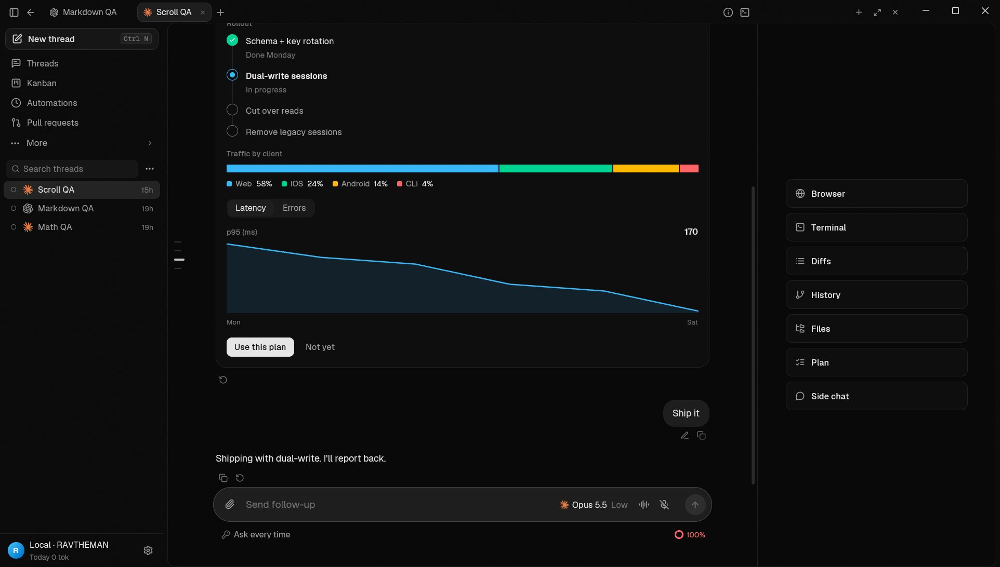

Generative UI
Agents answer with live dashboards, charts, timelines, checklists and option cards you can change. Your picks go straight back to the agent.
Open source · Native Rust · Local-first
Dove runs Claude Code, Codex, Cursor, Gemini, Devin and every other coding agent side by side. Each task gets its own worktree, a live transcript, a diff to review and a browser the agent can drive. Talk to it. Hand it your computer. Steer it from your phone.

Dove is not another agent. It is the workspace around all of them: one thread holds the chat, the terminal, the diff, the browser and the files, whichever model is doing the work, and you stay in control of every change.
The product
Streaming markdown, folded tool calls, inline diffs, mermaid, math and interactive cards the agent draws for you. A minimap of your prompts sits on the left.
Every task runs on its own branch. Stage hunks, comment on lines and send the review back to the agent. Commit, push and open the PR without leaving.
The side panel hosts a real browser. Agents navigate, click and type with trusted input and you watch the cursor move. Chrome extension for your logged-in tabs.
Run ten agents at once. Attention-sorted threads surface what needs you; drafts become cards; schedules and commit triggers start agents on their own.


Built in
Agents answer with live dashboards, charts, timelines, checklists and option cards you can change. Your picks go straight back to the agent.
Agents operate native desktop apps through the open-source cua-driver, reading the accessibility tree before they act. Destructive steps ask first.
Every agent can write .docx, .pptx, .xlsx and .pdf. Preview and edit them inside Dove.
Dove starts the agent while you type, so the answer begins the moment you hit enter.
GitHub, Slack, Linear, Notion and hundreds more, plus Paper for design. Every agent gets the same tools.
Dictation
Hold the mic in the composer or the terminal and speak. NVIDIA Parakeet turns it into text on your machine, and it lands in the input for you to edit and send.
Remote control
Pair the Dove app on iOS or Android with one sign-in. Watch transcripts live, approve commands, steer mid-turn and start new threads. The agent keeps running on your desktop; the edge relays events, never your repository.
Pricing
$0forever
Everything local, with your own keys.
Download$12per month
For one developer on many devices.
Start Pro$24per user / month
Shared threads for small teams.
Start TeamCustomannual
For security reviews and scale.
Contact usModel usage is never resold. Agents run on your own subscriptions and API keys on every plan.
Neither. Dove is the development environment around the agents. It launches the CLIs you already use, normalises their output into one event stream and gives each task a worktree, diff, browser and terminal.
No. Agents run on your own subscriptions and API keys. The desktop app is free and open source; paid plans only cover hosted sync, extra devices and team features.
Nowhere new. Dove runs on your machine and stores data in ~/.dove. Agents talk to their own providers as they would in a terminal. Remote control relays session events, not your repository.
Turn it on in Settings › Remote control and sign in. Sign in on your phone with the same account. Each session is published as a Loro CRDT document to an edge on Cloudflare Workers and Durable Objects; the phone sends commands back and the agent keeps running on your desktop.
macOS, Windows and Linux for the desktop app, with each OS's native web view for the in-app browser. iOS and Android for the remote.
Dove does not ship its own model or bind you to one vendor. It runs many agents side by side in isolated worktrees, in a native Rust app, and adds the shared pieces they lack: review, browser control, generative UI, voice, computer use, office documents and a mobile remote.
Free and open source. Bring your own agents.
cargo run -p dove